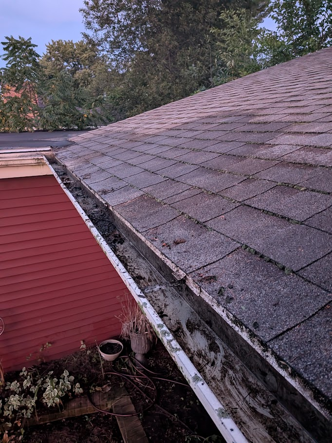
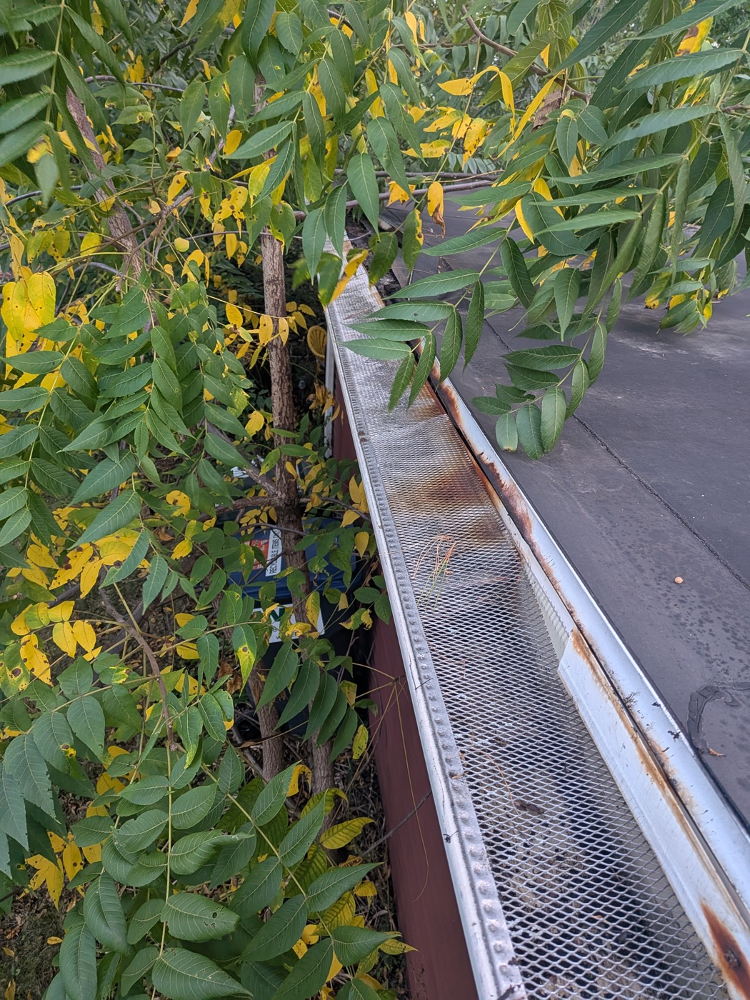

Gutter guards
How do I know if I have gutter guards?
Gutter guards are covers, screens, or inserts that sit over the gutter opening. They help keep larger debris out, but they also add extra time when the gutters are cleaned.


Quick check
Look for a cover over the top of the gutter.
If you can see an open trough when you look down at the gutter, you likely do not have gutter guards. If the top of the gutter is covered by mesh, screen, perforated metal, foam, brush, or a solid cover, you probably do.
Why the price is higher
Gutter guards are a good thing because they help reduce buildup. They still need cleaning though, and some guards take extra time because sections may need to be taken off and put back on during the cleaning.
You may have gutter guards if you see:
- A metal or plastic screen across the gutter opening
- Small holes or slots along the top of the gutter
- A solid cover tucked under the shingles
- Foam or brush material inside the gutter